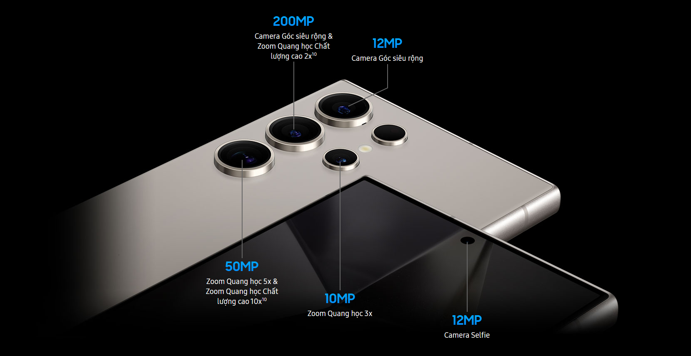

Thông tin sản phẩm
Samsung Galaxy S24 Ultra là thế hệ AI Phone đầu tiên được ra mắt bởi Samsung mở đầu cho năm 2024. Với việc tích hợp con chip Snapdragon 8 gen 3 mới nhất, song hành cùng công nghệ trí tuệ nhân tạo đầu tiên với các tính năng AI đột phá và hàng loạt cải tiến về thiết kế. Samsung S24 Ultra 5G xứng đáng trở thành smartphone top đầu năm 2024.
- Samsung Galaxy S24 Ultra với ngoại hình sang trọng với thiết kế tinh tế
- Màn hình lớn với độ sáng 2600nits
- Hiệu năng ấn tượng, làm việc đa tác vụ, chơi game mượt mà
- Camera S24 Ultra - Cảm biến 200M, quay video chuyên nghiệp với sự hỗ trợ của AI
- Viên pin lớn 5.000 mAh, sạc nhanh 45W
- Tính năng AI trên Samsung Galaxy S24 Ultra
- So sánh chi tiết thông số SS S24 Ultra và S23 Ultra
Tại sao nên sở hữu Galaxy S24 Ultra?
S24 Ultra là mẫu flagship được ra mắt với nhiều cải tiến đột phá so với thế hệ trước, mang đến trải nghiệm cao cấp và đẳng cấp cho người dùng. Cùng điểm qua một vài tính năng nổi bật của dòng Galaxy S24 Ultra 5G năm nay nhé!
| Số thứ tự |
Tính năng nổi bật |
| 1 |
Thiết kế khung viền Titan siêu bền chịu lực va đập cao. |
| 2 |
Các phiên bản màu sắc lấy cảm hứng từ các loại đá tự nhiên sang trọng và tinh tế như xám marble, vàng amber... |
| 3 |
Đột phá hiệu năng với con chip Snapdragon 8 gen 3 cùng sự hỗ trợ của công nghệ AI cân mọi thể loại game di động. |
| 4 |
Bộ tính năng AI siêu thông minh hỗ trợ dịch online/offline đa ngôn ngữ (cả Tiếng Việt), dịch tự động thời gian thực. |
| 5 |
Camera góc rộng đến 200MP với khả năng zoom 5x tích hợp trí tuệ nhân tạo quay chụp một chạm, biến video chất lượng cao thành video slow-motion. |
| 6 |
Samsung Galaxy S24 Ultra hỗ trợ mạng 5G tốc độ cao. |
| 7 |
Pin 5000mAh sử dụng liên tục 24h. |
| 8 |
Màn hình Dynamic AMOLED 2X với độ sáng lên đến 2600 nits vượt trội so với các thế thế hệ tiền nhiệm. |
Samsung S24 Ultra - Smartphone tiên phong cho kỷ nguyên AI
1. Samsung Galaxy S24 Ultra với ngoại hình sang trọng với thiết kế tinh tế
Samsung S24 Ultra 5G được trang bị khung viền bằng hợp kim Titan siêu bền ứng dụng trong ngành hàng không thay cho chất liệu Armor Aluminum cũ. Đây là chất liệu cao cấp, có độ bền cao, chống trầy xước và ăn mòn bền bỉ theo thời gian. Việc sử dụng titan cho khung viền của Galaxy S24 Ultra mang đến một siêu phẩm điện thoại có độ bền cao hơn so với thế hệ tiền nhiệm.
Điện thoại S24 Ultra đã loại bỏ màn hình cong, thay vào đó máy sử dụng màn hình phẳng để tránh bị chạm nhầm và cho cảm giác cầm nắm thoải mái hơn. Phần viền máy mỏng hơn giúp máy trông gọn gàng và tinh tế. Đặc biệt, dù sử dụng trong thời gian dài thì bạn cũng sẽ cảm thấy thoải mái, không cảm thấy cấn tay. Lợi ích của tấm nền phẳng tuy nhỏ nhưng "có võ" đó là dễ dán cường lực hơn.
Samsung đã hoàn thiện thêm phần viền của thiết bị dưới dạng nhám mờ nhằm tránh bám bẩn do mồ hôi và dấu vân tay. Máy sở hữu viền bezel siêu mỏng là một trong những điểm nhấn đáng chú ý nhất trên thiết kế của Galaxy S24 Ultra. Thay đổi trên dòng điện thoại Samsung Galaxy mới này mang đến một trải nghiệm giải trí trên màn hình rộng rãi, thoải mái và ấn tượng hơn bao giờ dành cho người dùng.
Thiết kế bút S Pen của Galaxy S24 Ultra sẽ có phần nút bấm phẳng, khi gắn vào máy sẽ ngang bằng với khung viền thay vì gồ lên một chút như ở Galaxy S23 Ultra. Nhờ đó khi sử dụng, phần tay đỡ máy sẽ không còn bị cấn vì đầu bút gồ lên như trước.
2. Màn hình lớn với độ sáng 2600nits
Galaxy S24 Ultra vẫn giữ nguyên kích thước màn hình 6.8 inch QHD+ cùng tần số quét 120Hz. Tuy nhiên, độ sáng màn hình sẽ được nâng cấp lên đến 2.600 nits, cao hơn 10% so với Galaxy S23 Ultra cho hình ảnh hiển thị trên màn hình trở nên rực rỡ và sắc nét hơn, ngay cả dưới ánh sáng mặt trời trực tiếp.
Độ phân giải 2K+ cũng sẽ giúp cho hình ảnh hiển thị sắc nét và chi tiết hơn. Với những nâng cấp về màn hình, Galaxy S24 Ultra hứa hẹn sẽ mang đến cho người dùng trải nghiệm xem phim, chơi game, giải trí vô cùng ấn tượng
Galaxy S24 Ultra 5G được trang bị Corning Gorilla Armor – loại kính cường lực mới tăng độ bền cao hơn 50% so với Gorilla Glass Victus 2.

3. Hiệu năng ấn tượng, làm việc đa tác vụ, chơi game mượt mà
Samsung S24 Ultra được trang bị chip Snapdragon 8 Gen 3 for Galaxy, phiên bản ép xung của Snapdragon 8 Gen 3. Chip này sẽ được sản xuất trên tiến trình 4 nm của TSMC, có 1 nhân chính xung nhịp đạt mức 3.3 GHz, 3 nhân phụ xung nhịp 2.5 GHz và 4 nhân phụ xung nhịp 1.8 GHz.
Trải nghiệm vuốt chạm trên Galaxy S24 Ultra mượt và thanh thoát. Hoạt ảnh trên máy cho hiệu ứng gọn gàng và tự nhiên hơn so với thế hệ đàn em. Bạn sẽ hiếm khi thấy một khoảnh khắc giật, lag khi sử dụng chiếc máy này.
Galaxy S24 Ultra được Samsung nâng bộ nhớ RAM mặc định của máy lên 12GB và 16GB đi kèm bộ nhớ trong 256 GB/512 GB/1 TB. Bộ nhớ RAM lớn cùng hệ thống tản nhiệt lớn hơn giúp thiết bị có thể chạy nhiều ứng dụng cùng lúc mà không bị giật lag. Bộ nhớ trong lớn giúp người dùng thoải mái lưu trữ dữ liệu, hình ảnh, video,... Người dùng còn có thể sử dụng nhiều tác vụ cùng lúc trên Galaxy S24 Ultra mà không phải lo về tình trạng giật lag.

Với cấu hình này, có thể nói, Galaxy S24 Ultra mang đến hiệu năng mạnh mẽ nhất phân khúc đem đến khả năng xử lý tốt mọi tác vụ từ cơ bản đến nâng cao như
- Chơi game ở mức cài đặt đồ họa cao đến max setting
- Chạy các ứng dụng nặng như chỉnh sửa video, thiết kế đồ họa
- Đa nhiệm nhiều ứng dụng cùng lúc
- Quay, chụp loạt ảnh với chất lượng cao
- Làm việc với Words, Exel online mượt mà kể cả file 1000 dòng
4. Camera S24 Ultra - Cảm biến 200M, quay video chuyên nghiệp với sự hỗ trợ của AI
Năm nay, Samsung đã loại bỏ camera zoom 10x thay thế bằng ống kính tiềm vọng 5x có độ phân giải lên tới 50MP. Trong điều kiện đủ sáng, máy cho ra những bức ảnh rực rỡ tươi sáng nhưng vẫn có chiều sâu. Camera tái tạo ánh nắng chân thật và không còn hiện tượng bị bệt như trên S23 Ultra.
Theo những thông tin hiện có, Samsung S24 Ultra được trang bị hệ thống camera sau gồm 4 ống kính, bao gồm:
- Camera chính 200MP, khẩu độ f/1.8, chống rung quang học OIS
- Camera góc siêu rộng 12MP, khẩu độ f/2.2
- Camera tele 10MP, khẩu độ f/2.4, zoom quang 3x
- Camera tele 50MP, khẩu độ f/2.8, zoom quang 5x

Cận cảnh cụm camera trên Galaxy S24 Ultra
Điểm đáng chú ý nhất trong hệ thống camera của S24 Ultra là sự xuất hiện của cảm biến chính 200MP. Đây là cảm biến lớn nhất từng được trang bị trên một chiếc smartphone, hứa hẹn sẽ mang lại khả năng chụp ảnh và quay video vượt trội.
Bù lại cho việc giảm khả năng zoom quang từ 10x xuống 5x, Samsung đã trang bị cho S24 Ultra khả năng quay video 4K 120 FPS và cải thiện đáng kể khả năng chuyển đổi giữa các ống kính khi quay video 4K 60 FPS. Ngoài ra, với sự hỗ trợ của AI, Galaxy S24 Ultra có thể tận dụng tối đa sức mạnh của cụm camera trong chụp ảnh và quay video như dân chuyên.
5. Viên pin lớn 5.000 mAh, sạc nhanh 45W
Samsung Galaxy S24 Ultra được trang bị viên pin có dung lượng 5000 mAh sử dụng liên tục cả ngày. Bên cạnh đó, Galaxy S24 được trang bị công nghệ sạc nhanh với công suất tối đa lên đến 45W. Nhờ đó, bạn chỉ mất khoảng 1 tiếng 27 phút để sạc đầy viên pin 5000 mAh, giúp bạn tiết kiệm thời gian và không bị gián đoạn trong quá trình sử dụng.

6. Tính năng AI trên Samsung Galaxy S24 Ultra
Samsung S24 Ultra được tích hợp tính năng AI toàn diện, được hỗ trợ bởi công nghệ AI tích hợp trên thiết bị phát triển bởi Samsung. Galaxy AI được cài đặt sẵn trên S24 Ultra cùng với con chip Snapdragon 8 thế hệ 3. Một số tính năng AI nổi bật trên Samsung S24 Ultra bao gồm:
Thông dịch ngôn ngữ trực tiếp: Tính năng này cho phép người dùng thực hiện cuộc gọi thoại với người dùng ở quốc gia khác mà không cần thông qua ứng dụng dịch thuật. AI sẽ tự động nhận dạng ngôn ngữ của người đối thoại và dịch sang ngôn ngữ của người dùng.
Circle To Search - khoanh vùng và tìm kiếm: Sử dụng ngón tay hoặc bút S Pen khoanh tròn vùng cần tìm kiếm. Kết quả sẽ được hiển thị ngay lập tức bên dưới mà không cần thoát trang.
Trợ lý phiên dịch đồng hành trên mọi hành trình: Cần giao tiếp với người địa phương khi bạn đi du lịch? Thật dễ dàng. Với Galaxy AI, trợ lý phiên dịch sẽ luôn bên bạn mọi lúc mọi nơi, ngay cả khi ở chế độ máy bay, hoặc ko có wi-fi.
Tự động chọn "tone giọng" cho cuộc trò chuyện: Chọn tone giọng tự động trong nhắn tin hoặc tạo story đăng tải trên các mạng xã hội

Tóm gọn ghi chú trong nháy mắt với sức mạnh AI: Cho dù bạn đang gõ thật nhanh hay tốc ký, Note Assist sẽ giúp bạn tóm lược ý chính của mình.4 Chỉ cần bắt đầu viết và định dạng thành một bản tóm tắt rõ ràng, dễ xem lại sau này.
Và khi bạn tìm kiếm một ghi chú cũ, các trang bìa sẽ hiển thị các tóm tắt đơn giản — sắp xếp màn hình của bạn thật ngăn nắp để bạn có thể tìm thấy mọi thứ một cách dễ dàng.
Quick Share - chia sẻ với mọi thiết bị: chia sẻ với thiết bị iOS hoặc mọi thiết bị Android khác qua mã QR hoặc danh bạ đã lưu
Nightography Zoom: Tính năng này giúp cải thiện độ sáng của bức ảnh khi zoom trong điều kiện thiếu sáng.
Tối ưu hóa bối cảnh: AI sẽ nhận dạng 12 loại chủ thể/đối tượng khác nhau và tối ưu hóa bối cảnh để cho ra chất lượng ảnh tốt nhất ở độ phân giải 200 MP.
Generative Edit: Tính năng này cho phép người dùng di chuyển hoặc xóa các đối tượng trong ảnh theo ý thích.
Tính năng AI chỉnh ảnh: chỉnh sửa ảnh theo ý thích, di chuyển vật thể, lấp đầy chỗ trống...một cách đơn giản
Samsung Galaxy S24 Ultra có mấy màu?
Samsung đã mời Hubert H.Leem (cựu giám đốc sáng tạo của Mercedes-Benz) tiếp nhận vị trí Giám đốc trải nghiệm di động của hãng. Chính vì thế, người dùng có thể phần nào an tâm về việc thiết kế mới trên Galaxy S24 Ultra sẽ có ít nhiều thay đổi mang hơi thở sang trọng của dòng điện thoại dành cho đối tượng người dùng tinh hoa.

Samsung Galaxy S24 Ultra có 04 phiên bản màu tiêu chuẩn bao gồm:
- Titanium Gray (Xám)
- Titanium Violet (Tím)
- Titanium Black (Đen)
- Titanium Yellow (Vàng)
Các phiên bản màu mới của S24 Ultra được Samsung lấy cảm hứng từ màu của các loại đá trong tự nhiên tích trữ nguồn năng lượng tốt. Vì thế, người dùng có thể tự lựa chọn màu sắc Galaxy S24 Ultra phong thủy phù hợp với bản mệnh của mình.
Samsung Galaxy S24 Ultra có chống nước không?
Khả năng Samsung S24 sẽ sở hữu khả năng chống nước cao IP68. Galaxy S24 Ultra đều được trang bị khả năng chống nước và bụi bẩn chuẩn IP68.
Đây là tiêu chuẩn quốc tế cho biết khả năng chống nước của thiết bị, với IP68 thiết bị có khả năng kháng bụi hoàn toàn và có thể chống lọt nước ở độ sâu tới 1.5 mét trong vòng tối đa 30 phút.
Với việc được trang bị tiêu chuẩn chống nước và bụi bẩn IP68, người dùng hoàn toàn có thể yên tâm sử dụng Samsung S24 Ultra ở trong các điều kiện khắc nghiệt như hoạt động dưới trời mưa, gió, hay ngay cả khi sử dụng ở khu vực bể bơi hay bãi biển.